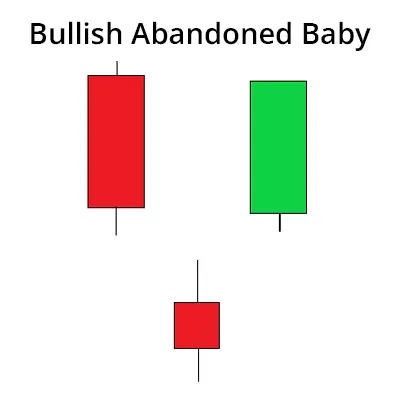

बुलिश एबैंडन्ड बेबी पैटर्न उद्धरण करता है कि उपट्रेंड के उलटने का संकेत है और ट्रेडर्स द्वारा एक खरीद पोजीशन में शामिल होने के लिए इस्तेमाल किया जाता है।
यह तीन कैंडलस्टिक से बना होता है और डाउनट्रेंड के अंत में बनता है।
पहली कैंडलस्टिक एक बड़ी बियरिश कैंडलस्टिक होती है जिसे एक गैप डाउन करते हुए एक डोजी कैंडलस्टिक फॉलो करता है।
तीसरी कैंडलस्टिक डोजी से ऊपर खुलती है और आमतौर पर बुलिश कैंडलस्टिक होती है।
इस पैटर्न के बनने के बाद, ट्रेडर्स की उम्मीद होती है कि कीमत ऊपर जारी रहेगी और बुल्स बाजार में वापस हो जाएंगे।
| Formation of Abandoned Baby Pattern: |

| What does Abandoned Baby Candlestick Pattern tell us? |
जैसा कि हमने पहले चर्चा की है, अधोगति शम्पनियन पैटर्न एक रिवर्सल कैंडलस्टिक पैटर्न है।
बुलिश अधोगति शिशु पैटर्न भालुओं की बिक्री दबाव के समाप्त होने और बाजार में बैलों के वापसी का संकेत देता है।
वहीं, बियरिश अधोगति शिशु संकेत देता है कि बैल छोड़ रहे हैं और बाजार में भालुओं की वापसी की इशारा करता है।
बुलिश अधोगति शिशु गठन के पीछे की मनोवृत्ति यह सुझाती है कि बाजार ने पहली कैंडल में एक महत्वपूर्ण बिकवाली देखी है।
इस कारण से, एक बियरिश कैंडलस्टिक बनता है।
उसके बाद एक डोजी कैंडलस्टिक पैटर्न बनता है, जो साबित करता है कि अब बाजार के लिए अस्पष्ट है कि खुलने और बंद होने की कीमतें समान हैं या नहीं।
इस मामले में, यह इस बात का संकेत देता है कि भालुओं का कब्जा कमजोर हो रहा है और बाइयों ने बाजार पर कब्जा कर लिया है।
तीसरी बल्लिश कैंडल संकेत करती है कि रुझान उत्तरदायी दिशा में बदल गया है और भी डोजी से ऊपर गैप कर रहा है।
बिकरी अवकाशित बेबी पैटर्न के गठन के पीछे बाजार में पहले कैंडल में बड़ी मात्रा में खरीददारी हुई है, इसी कारण से एक बल्लिश कैंडल बनती है।
तब बाद में एक डोजी बनता है, जो स्पष्ट करता है कि अब बाजार यह अनिश्चित है कि खुलने और बंद होने के मूल्य समान हैं या नहीं।
इस मामले में, यह दर्शाता है कि बैयाओं का कब्जा खत्म हो रहा है और भालुओं का कब्जा बाजार पर होने वाला है।
तीसरी बियरिश कैंडल संकेत करती है कि रुझान दक्षिणदायी दिशा में बदल गया है और भी डोजी से नीचे गैप कर रहा है।
| Trading with Abandoned Baby Candlestick Pattern: |
ट्रेडर इस कैंडलस्टिक पैटर्न के साथ व्यापार करते समय निम्नलिखित बिंदुओं को याद रखने चाहिए:
बुलिश एबंडन बेबी के मामले में, ट्रेडर्स डोजी के निचले छायांश के नीचे स्टॉप-लॉस लगा सकते हैं।
उसी तरह, बियरिश एबंडन बेबी के मामले में, ट्रेडर्स डोजी के ऊपरी छायांश के ऊपर स्टॉप-लॉस लगा सकते हैं।
ट्रेडर्स को फिबोनाची रिट्रेसमेंट या मूविंग औसत इंडिकेटर जैसे अन्य ट्रेडिंग उपकरणों के साथ इस पैटर्न की गणना की जानी चाहिए।
| Key Takeaways: |